3분 만에 온 승인 메일과 받는 것 네 가지
채널 운영자는 오후 4시 16분에 신청서를 내고, 3분 뒤인 4시 19분에 승인 메일을 받았어요. 한 일은 회사 메일로 Console 조직을 만들고 신청서 한 장을 채운 것뿐이라고 해요. 아래 받은편지함에서 제목 'You're in. Welcome to Claude Startups.'와 오른쪽 빨간 테두리의 4:19 PM 시각을 보면 돼요.
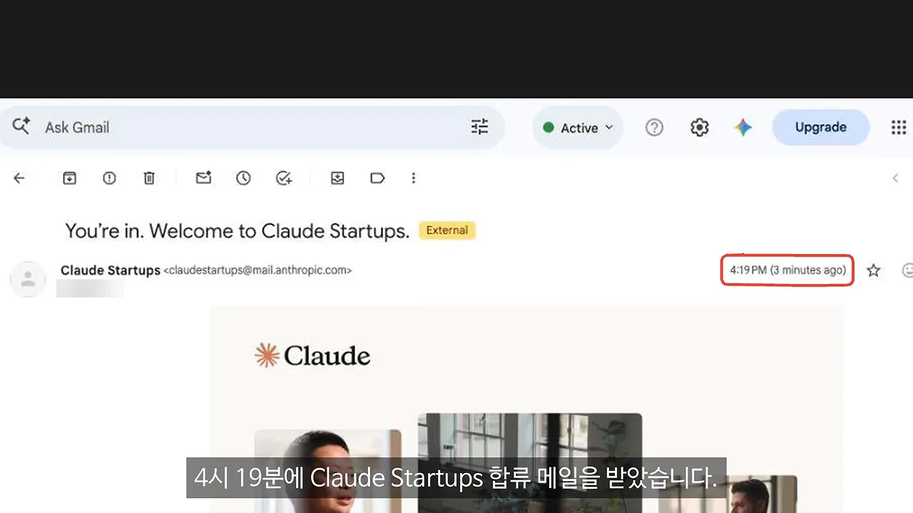
승인되면 받는 것
영상은 혜택을 카드 네 장으로 정리해요. 왼쪽부터 Team 12개월 무료, API 크레딧 1,000달러, 매주 오피스아워, 파트너 혜택 16곳이에요. 카드마다 아래 작은 글씨에 조건이 붙어 있어요. Team은 'Premium 5석 무료, 최소 2석부터', 크레딧은 '받은 날부터 180일'이에요.
세 번째 혜택인 오피스아워는 Anthropic의 Applied AI 팀과 시간을 잡아 설계나 평가를 상의하는 자리예요. 네 번째인 파트너 혜택은 합치면 최대 4만 5천 달러 규모라고 해요. 영상이 짚은 몇 곳을 표로 옮겼어요.
| 파트너 | 무엇을 하는 곳 | 혜택 |
|---|---|---|
| ElevenLabs | AI 음성 서비스 | 12개월 무료 + 3,300만 글자 |
| ClickHouse | 분석용 데이터베이스 | 클라우드 크레딧 5,000달러 |
| Linear | 프로젝트 관리 도구 | Business 플랜 6개월 무료 |
| Gamma | 발표 자료 만들기 | 첫해 25% 할인 |
| Granola | 회의 메모 앱 | Business 플랜 3개월 무료 |
멤버 포털의 파트너 카드 화면이에요. 가운데 빨간 테두리가 ElevenLabs 카드고, 그 옆으로 Augment Code, Emergent, Gamma, Granola 카드가 이어져요. 나머지 회사의 조건은 승인 뒤 포털에서 확인하라고 해요.
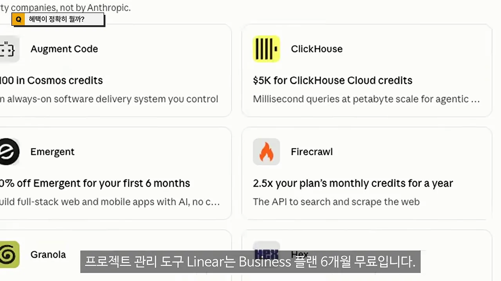
신청 조건과 Console 조직 먼저 만들기
조건은 단순해요. 설립 5년 이내이거나, 최근 2년 안에 투자를 받았으면 돼요. 투자를 받지 않아도 되고, 채널 운영자도 투자 없이 신청했어요. 슬라이드 아래 두 줄이 실제로 막히는 지점이에요. 1번은 로그인 메일 도메인과 회사 웹사이트 도메인이 같아야 한다는 것, 2번은 Claude Console 조직(API 조직)이 먼저 있어야 한다는 것이에요. 2번 오른쪽 작은 글씨가 '없으면 신청서가 안 열림'이에요.
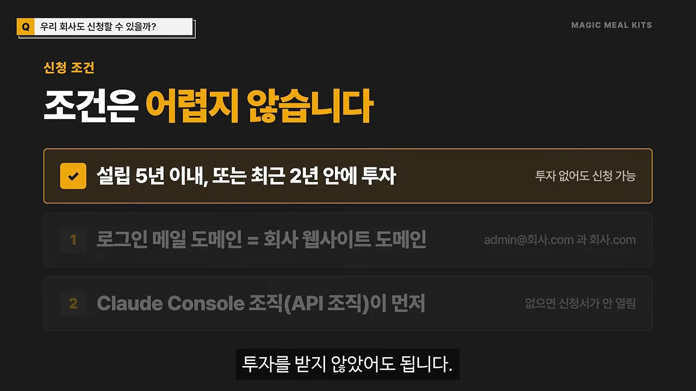
같은 도메인의 회사 메일
먼저 회사 사이트가 열려 있어야 해요. 채널 운영자는 사이트를 당일 열고 바로 신청했어요. 다음은 같은 도메인의 메일이에요. 이들은 Google Workspace에 회사 도메인 별칭 메일을 만들어 썼어요. 슬라이드의 X 표시처럼 'Google로 계속하기' 버튼을 누르면 원래 계정 주소로 로그인돼요. 체크 표시처럼 회사 도메인 메일 주소를 직접 입력해야 별칭 메일이 로그인 주소가 돼요.
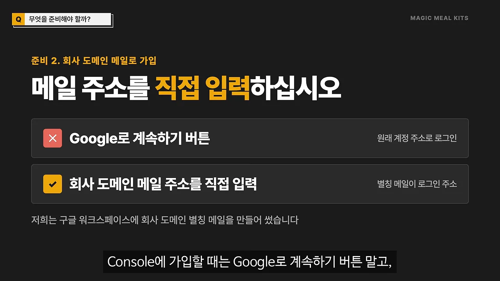
신청 페이지가 먼저 조직을 요구해요
준비가 끝나서 신청 페이지를 열면 신청서 대신 'Create an API organization first' 상자가 떠요. 이 혜택은 API 조직에 주는 것이라 조직이 없으면 신청서가 안 열려요. 채널 운영자도 여기서 한 번 막혔다고 해요. 상자 아래 검은 Create an organization 버튼으로 조직부터 만들어요.
Console 조직 만들기
Claude Console에 처음 들어가면 API를 어떻게 쓸지 물어요. 왼쪽 Individual은 혼자 쓰는 계정, 오른쪽 Organization은 팀원을 초대하고 결제를 한곳에서 관리하는 조직 계정이에요. 빨간 테두리처럼 오른쪽을 골라요.
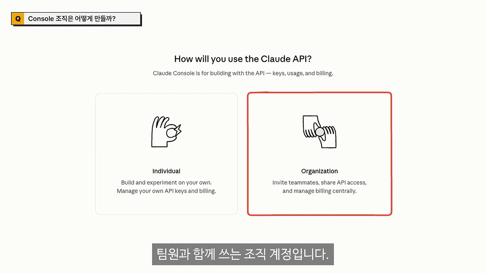
다음 화면은 조직 정보예요. 조직 이름에는 회사 이름(Magic Meal Kits)을 그대로 넣었어요. 빨간 테두리 체크박스는 같은 회사 도메인 메일을 쓰는 사람이 이 조직을 찾아 가입 요청을 하게 해 주는 설정이에요. 조직 형태는 Small or medium business, 국가는 회사가 있는 나라를 골라요.
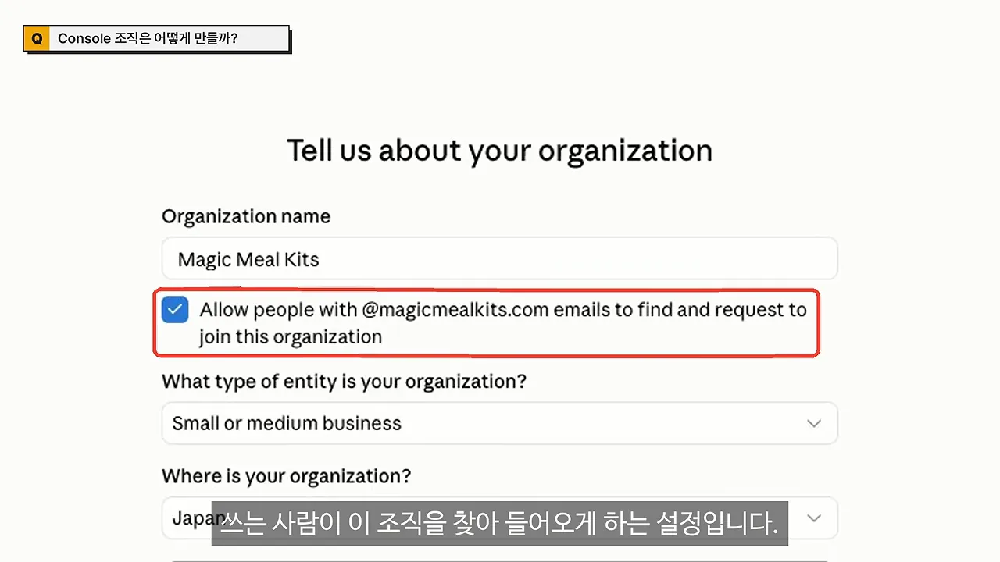
이어서 API 사용 질문이 나와요. 회사 소재지가 일본으로 되어 있어서 '일본 밖에서도 쓰나요'라고 묻고, 채널 운영자는 Yes와 South Korea로 답했어요. 고객이 내부인지 외부인지는 빨간 테두리처럼 Both, 용도는 한두 문장으로 짧게 적었어요.
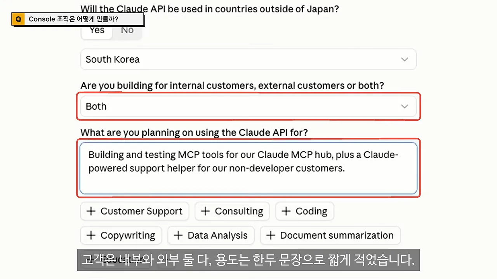
마지막 확인 질문은 두 개예요. 위 칸은 소비자에게 법률·의료·금융 조언을 하는지, 아래 칸은 18세 미만 대상 서비스에 쓰는지 물어요. 둘 다 No로 답하고 Create account를 누르면 조직이 만들어져요.
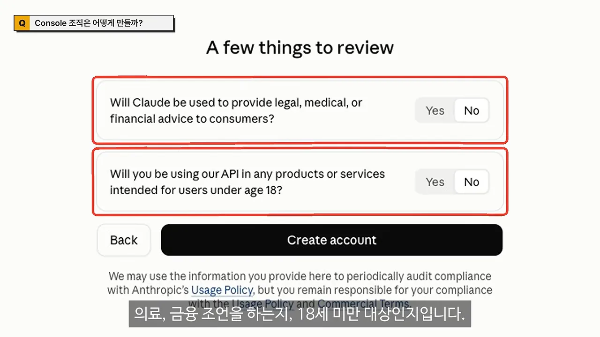
휴대폰에서 Console을 다시 열어 보니 조직 목록에 Magic Meal Kits가 체크 표시와 함께 생겨 있었어요. 이름 아래에 'Team API plan'이라고 적혀 있어요.
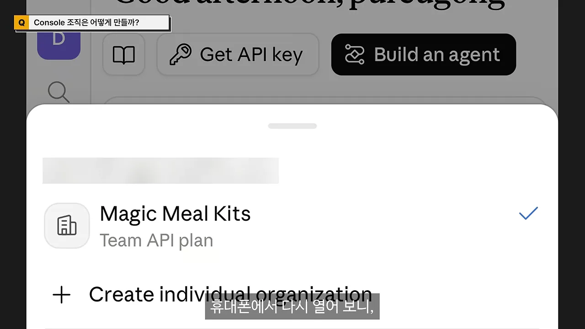
신청서 채우기와 500자 제한
신청서는 위에서부터 차례로 채워요. 맨 위 Organization 칸에는 방금 만든 조직이 회색으로 자동 입력돼 있어요. 그 아래 Your details와 Your company에 이름, 회사 이름, 직함(Founder & CEO(Chief Executive Officer))을 넣어요.
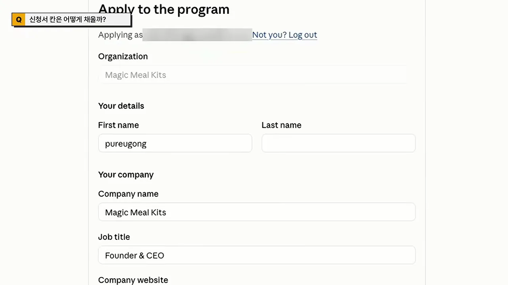
회사 웹사이트는 로그인 메일과 같은 도메인으로 넣어요. 국가와 도시, 업종(Software & SaaS), 설립 연월을 고른 뒤, 빨간 테두리의 Latest funding round에서 아직 투자를 받지 않았다는 뜻의 'Not yet raised'를 골랐어요.
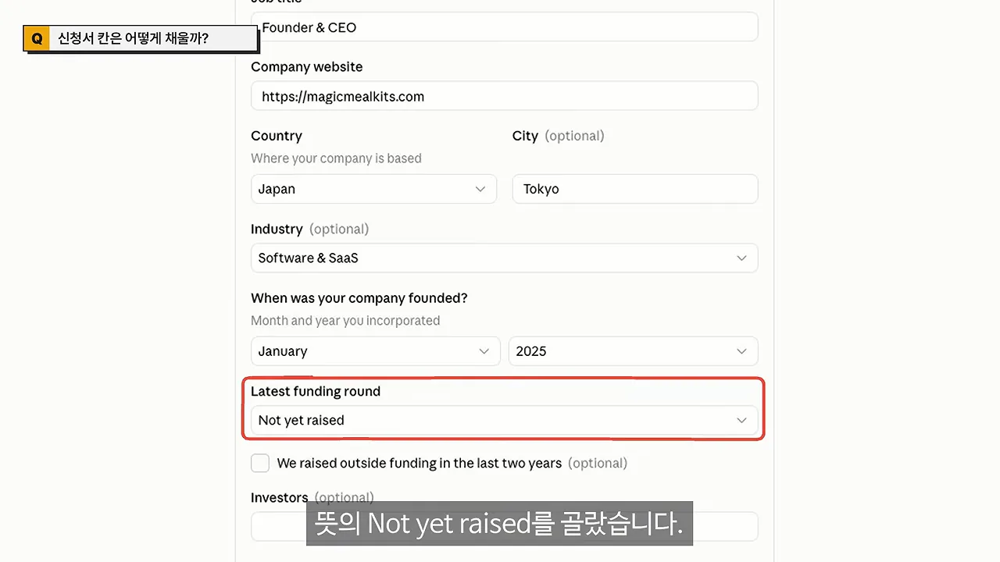
How you're building 부분은 Anthropic에게 어떤 도움을 받고 싶은지부터 물어요. 빨간 테두리 칸에 채널 운영자는 MCP(Model Context Protocol) 도구 설계에 대한 피드백과 테스트용 크레딧을 적었어요. 그 아래 월 AI 지출 중 Anthropic 비중은 81–100%를 골랐어요.
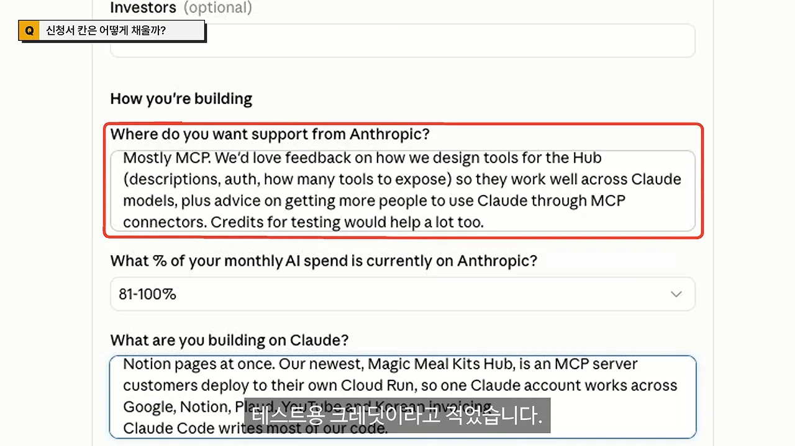
500자 제한에서 한 번 걸려요
'What are you building on Claude?' 칸은 50자 이상 500자 이하로 써야 해요. 채널 운영자는 하고 싶은 말이 많아 처음에 1,300자쯤 넣었다가, 칸 아래에 빨간 'Please write between 50 and 500 characters.' 경고를 받았어요.
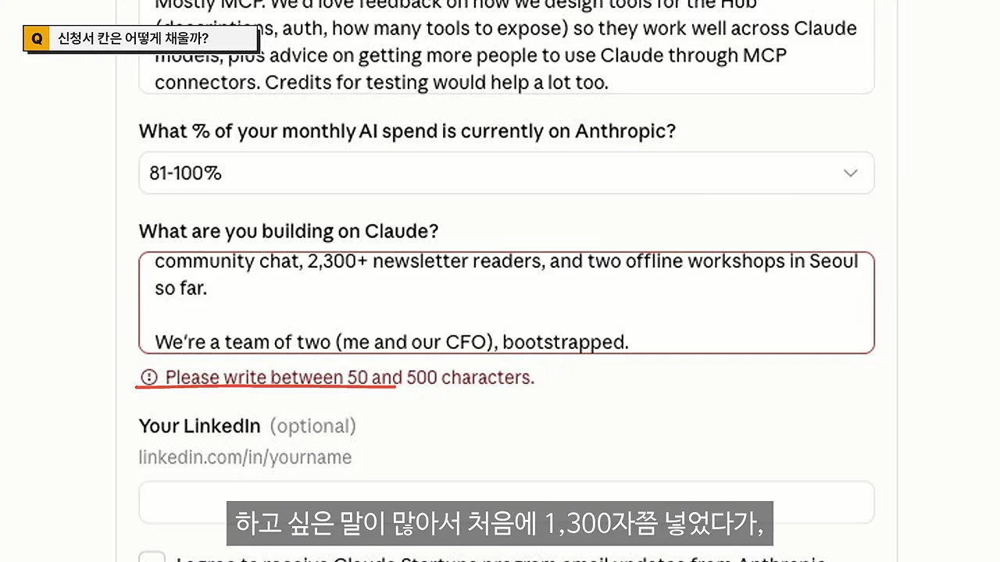
그래서 세 가지만 남기고 500자 안으로 줄였어요. 무엇을 만드는지, 누가 쓰는지, Claude를 어떻게 쓰는지예요. 영상은 처음부터 영어로 500자 안쪽 소개를 준비해 가라고 권해요.
- 무엇을 만드나요?
- 누가 쓰나요?
- Claude를 어떻게 쓰나요?
제출과 승인
LinkedIn 칸과 소식 메일 수신 동의는 선택이에요. 그 아래 약관 동의(Startup Program Terms) 체크는 필수예요. 체크한 뒤 빨간 테두리의 Submit application을 눌러요.
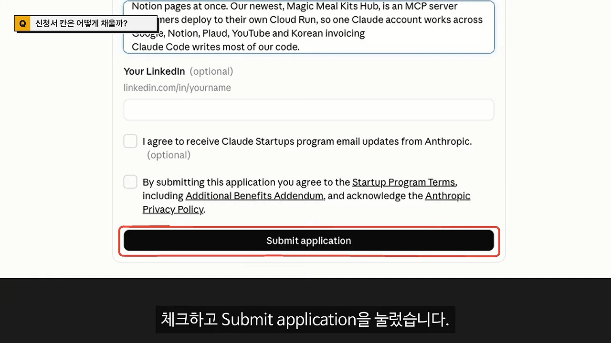
제출하면 'Thanks for submitting!' 접수 화면이 떠요. 이때가 오후 4시 16분이었어요. 3분 뒤 4시 19분에 'You're in.'으로 시작하는 메일이 왔어요. 메일 가운데 검은 Redeem your offers 버튼이 멤버 포털로 가는 길이고, 그 아래 Here's what comes with your membership에 받는 것이 정리돼 있어요. Team 1년, API 크레딧, 파트너 혜택, 오피스아워와 행사 초대예요.
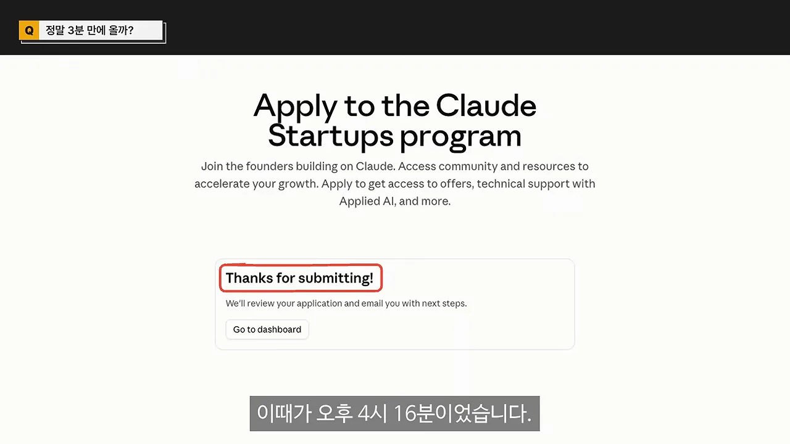
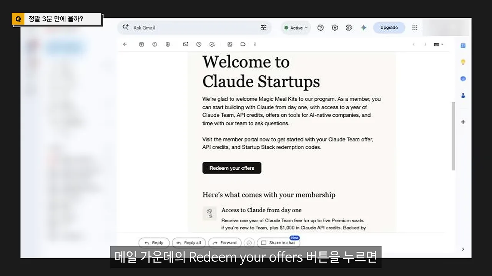
멤버 포털과 Team 결제 화면
멤버 포털에 들어가면 맨 위 카드 세 장이 핵심이에요. 왼쪽부터 Claude Team 12개월, API 크레딧 1,000달러, Applied AI 오피스아워예요. 오른쪽 위에 초록색 Eligible이 붙은 카드는 받을 수 있다는 뜻이고, 카드 아래 Claim을 누르면 받아요. 오피스아워 카드에는 Claim 대신 Book a session이 있어요.
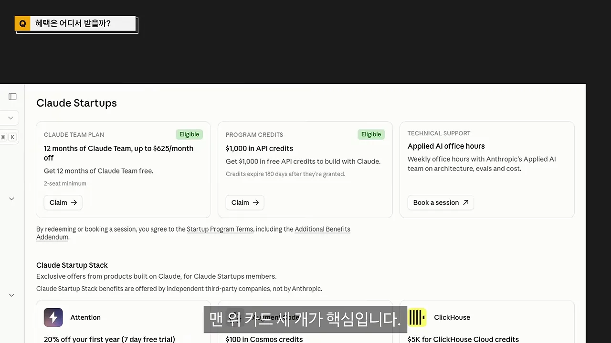
크레딧 카드를 확대하면 아래 작은 글씨에 'Credits expire 180 days after they're granted'라고 적혀 있어요. 받은 날부터 180일 뒤 만료된다는 뜻이에요.
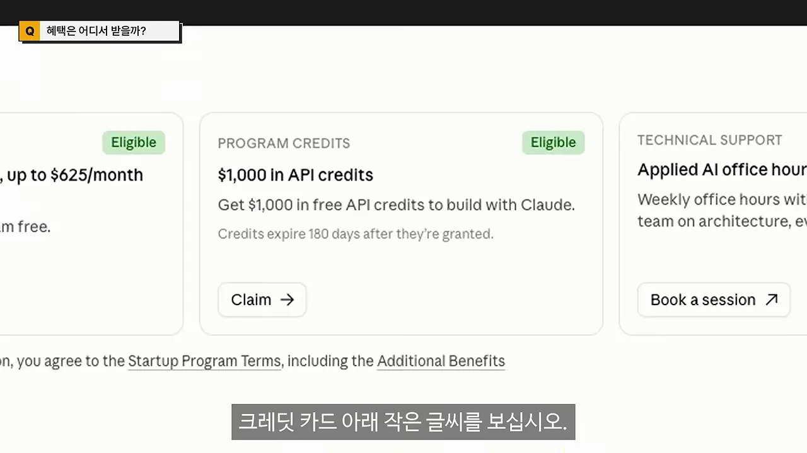
Team 결제 화면 읽는 법
Team 카드에서 Claim을 누르면 좌석을 고르는 결제 화면(Choose your seats and plan)이 나와요. 금액이 커 보여도 놀랄 필요는 없다고 해요. Order details에 좌석이 두 종류 있어요. 빨간 테두리처럼 Standard는 좌석당 월 25달러, Premium은 125달러예요. Premium 아래에는 '5x more usage than standard seats'라고 적혀 있어요.
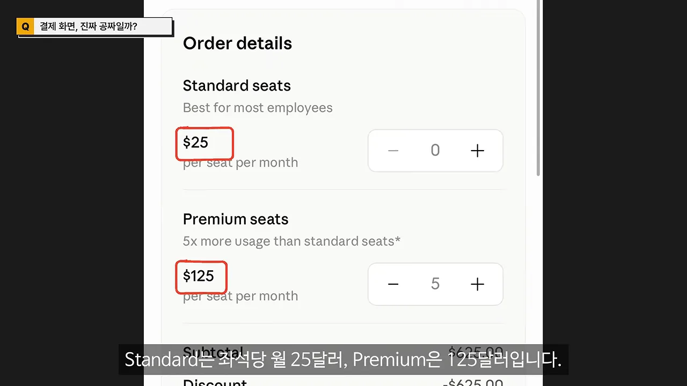
| 좌석 | 정가(좌석당 월) | 사용량 | 기능 |
|---|---|---|---|
| Standard | 25달러 | 기준 | 같아요 |
| Premium | 125달러 | Standard의 5배 |
Premium을 최대치인 5석까지 넣으면 소계가 625달러가 되고, 바로 아래 Discount 줄에서 같은 625달러가 빠져요. 맨 아래 Total due today가 0.00달러예요. 12개월이면 7,500달러어치예요.
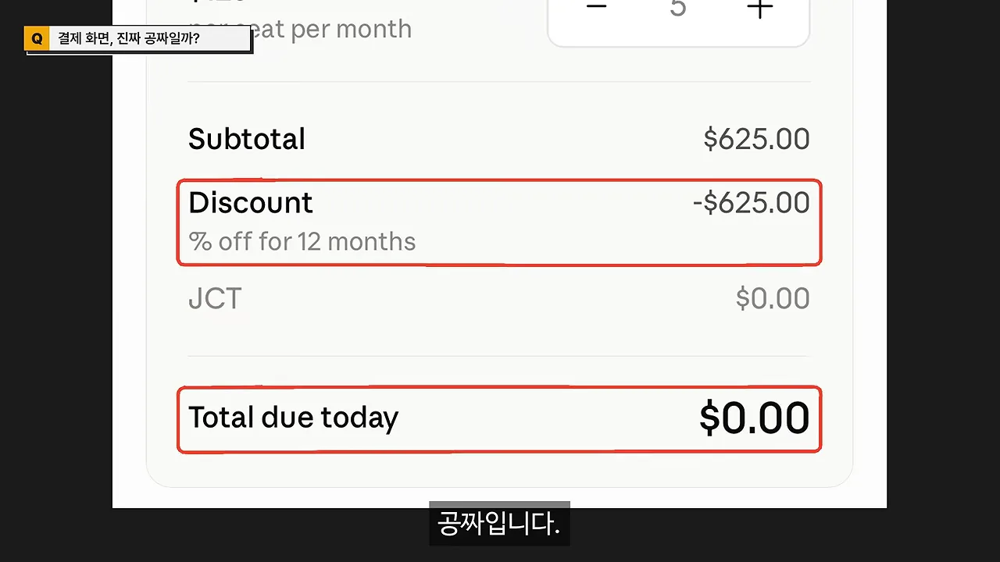
공짜여도 꼭 알아둘 두 가지
하나, 0달러여도 결제 카드는 등록해야 해요. 둘, 화면 아래 안내문을 보면 2027년 10월 7일까지는 월 0달러(세금 별도)이고, 그 뒤에는 정가로 자동 갱신된다고 적혀 있어요. 빨간 줄이 그어진 부분이 그 날짜예요.
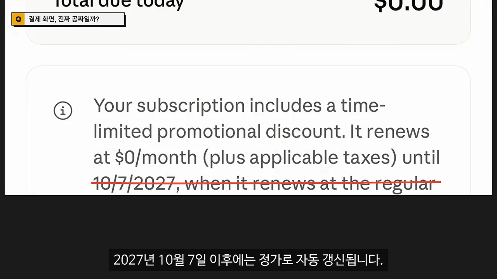
기간을 한 줄에 놓고 보면 이래요. 크레딧은 받은 날부터 180일, Team 무료는 12개월이고, 그 뒤 Premium 5석을 그대로 두면 매달 625달러가 청구되는 정가로 넘어가요.
혜택 제대로 쓰는 법
영상은 혜택을 제대로 쓰는 법을 세 가지로 정리해요. 모두 '받은 것을 낭비하지 말자'는 이야기예요.
- Premium 좌석은 실제로 쓰는 사람 한 명에 한 석씩 — 쓰는 사람에게만 배정해요.
- 반복 작업과 자동화는 API 크레딧으로 — Team 좌석이 아니라 1,000달러 크레딧으로 돌려요.
- 크레딧과 파트너 혜택은 쓸 때 받기 — 받는 날부터 기간이 시작되니 미리 받지 않아요.
마지막으로 신청 순서를 네 줄로 정리해요. 슬라이드의 1~3번이 신청 전에 막히지 않는 법이고, 4번이 승인 뒤 놓치기 쉬운 점이에요.
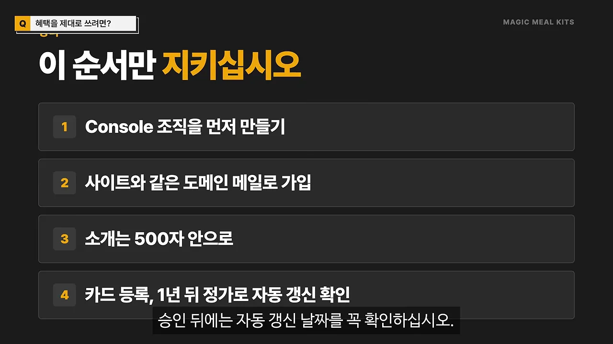